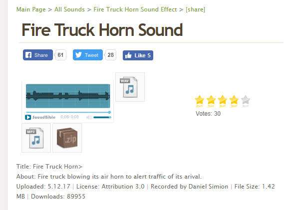
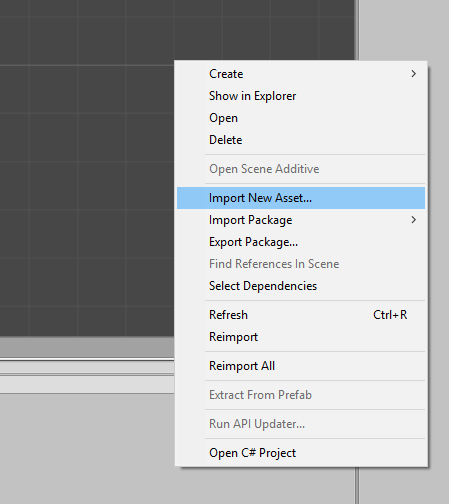
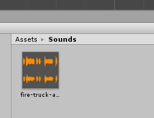
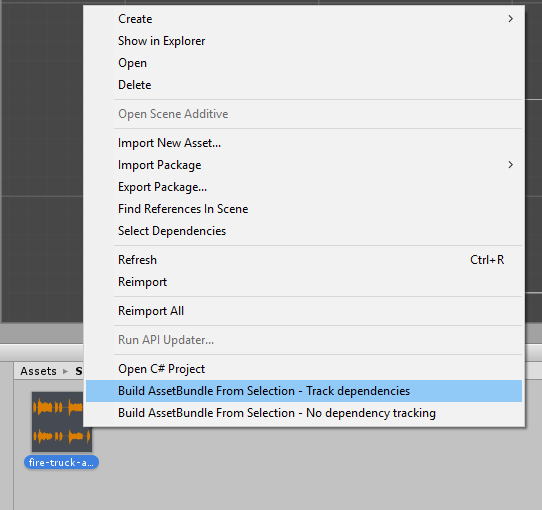
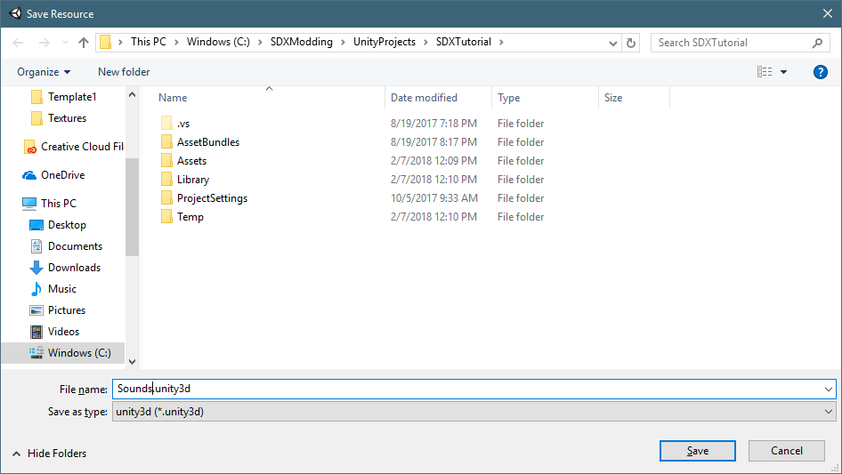

This tutorial will help cover how to add custom sounds, like .wav files, into the game, and how to access them.
There are many free sound effects you can find online. For example, soundbible.com is a free sound site that has thousands of sound effects. For this tutorial, we are going to download a wav file from soundbible, create an asset bundle, then write the XML to add it to the game.
http://soundbible.com/free-sound-effects-1.html
You can choose any sound you want. For this tutorial, we are going to use the Fire Truck Horn sound by Daniel Simion: http://soundbible.com/2192-Fire-Truck-Horn.html

You can click on the Play button and hear the sound effects. From there, click on the WAV icon to download the file.
Once downloaded, go into Unity and right click in the Asset pane, and select Import New Asset

And select your new Wav file. After a few seconds, it'll appear in your Asset window.

To export, you do the same steps as you would for a block or entity, by right clicking, and generating an Asset Bundle. You can multi-select the sounds as well.

For this example, we are saving it as Sounds.unity3d, and place it in your Resources folder.

In your Config XML, you'll reference the sounds like this:
<configs> <config name="sounds"> <append xpath="/Sounds"> <SoundDataNode name="FireTruck"> <AudioSource name="Sounds/AudioSource_VO" /> <Noise ID="3" range="100" volume="25" time="10" muffled_when_crouched="0.65" heat_map_strength="0.05" heat_map_time="60" /> <AudioClip ClipName="#Sounds?fire-truck-air-horn_daniel-simion" /> <LocalCrouchVolumeScale name="1.0" /> <CrouchNoiseScale name="0.5" /> <NoiseScale name="1" /> <MaxVoices name="10" /> <MaxRepeatRate name="1.111" /> </SoundDataNode> </append> </config> </configs> |
Notice the ClipName is the Unity3d file, along with the name of the asset itself.
To attach the new clip to an entity, you can adjust the value to point to the new SoundDataNode:
<property name="SoundSense" value="FireTruck" />
Created with the Personal Edition of HelpNDoc: Easy to use tool to create HTML Help files and Help web sites